indices/indexes
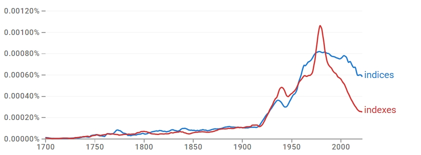
결론
indexes와 indices는 완전히 다른 의미를 담당하는 관계라기보다, ‘색인’과 ‘지표’라는 공통 의미 영역을 공유하면서도 세부 기능·사용 환경이 점차 분화되며 사용량 경쟁을 겪은 사례다. indexes는 출판·문서·데이터베이스·프로그래밍에서 정보의 위치를 안내하는 색인의 의미로, indices는 경제·금융·과학·통계·기술 분야의 추상적 수치·측정값을 나타내는 지표의 의미로 우세하다. 따라서 공존 → 장기 경쟁 → 의미 분화에 속한다.
연구 결과
과정 및 결론 도달 과정 · 사용 도구
1차 Ngram 사용량 그래프로 두 형태의 시기별 위상 변화(1970년대 규칙형 정점 후 고전형 재추월)를, 2차 같은 그래프로 경쟁과 교차의 경로를 읽었다. 3차는 Ngram 연어(subject/card/author vs refractive/economic/reliability)와 COCA 맥락 분석(색인·프로그래밍 vs 경제·학술·과학 지표)에 더해 사전·스타일 가이드(OED, Merriam-Webster, Fowler) 규범 자료까지 활용해 의미 분화를 해석했다.
세부 정보 · 구간 별 분절
두 형태 모두 사용량이 증가하나 위상이 시기별로 갈린다. 초기에는 비슷한 수준에서 병행되다 20세기 중반 이후 모두 빠르게 상승해 경쟁 구도를 이룬다. 1970년대 전후 규칙형 indexes가 일시적으로 더 높은 정점에 도달하나 이후 급락하고, 고전형 indices는 20세기 후반 이후에도 높은 수준을 유지하며 장기적으로 indexes를 다시 추월한다. 현재 균형은 고전형 indices 쪽으로 기운다.
즉각 대체가 아니라, 일정 기간의 경쟁과 교차를 거친 뒤 고전형이 상대적 우위를 확보하는 경로다.
indexes는 subject/card/author 및 periodical/cumulative/annual과 결합해 서적·카드·문서·DB의 색인을 가리키고, indices는 reliability/diversity/performance/vegetation 및 refractive/economic/negative와 결합해 수치화된 지표·지수를 가리킨다(두 형태 모두 price/market/cost/production은 공유). COCA에서 indexes는 책·문서·DB·프로그래밍 색인과 일부 대중 경제·기상 지표에, indices는 경제·금융 지표·학술 진단 지표·과학/기술 측정값에 분포한다. 나아가 OED·Merriam-Webster는 책의 찾아보기에 indexes, 수학·과학·경제 지표에 indices를 구분하고 Fowler도 이를 명시해, 규범 차원에서 분화가 강화되었다. 형태가 곧 의미를 가르는 의미 분화다.
indexes는 책·문서·데이터베이스의 색인을, indices는 경제·과학·통계의 추상적 지표를 가리키는 의미로 갈라지며 형태가 분화되었다. 이 분화는 OED·Merriam-Webster·Fowler 등 사전과 스타일 가이드가 뒷받침한 제도적 규범에 의해 더욱 굳어졌다.
참조 이미지
연어 그래프 · COCA 맥락 캡처 펼치기
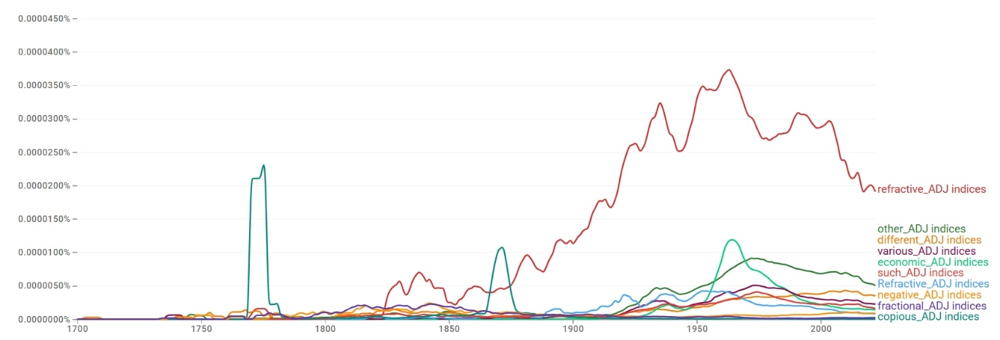
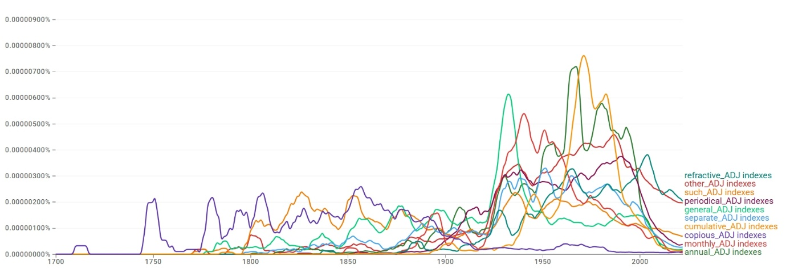
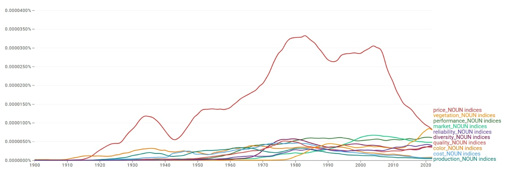
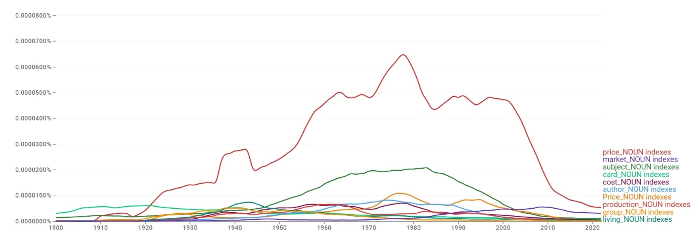
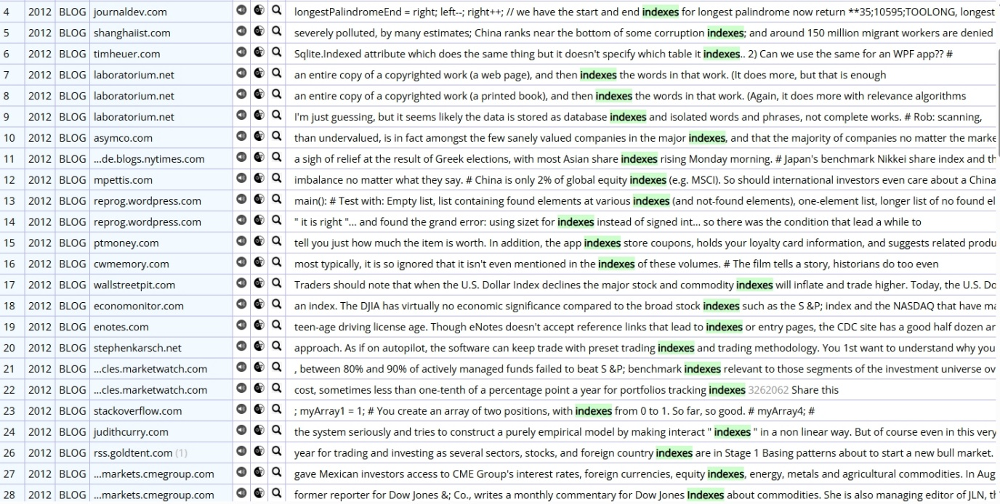
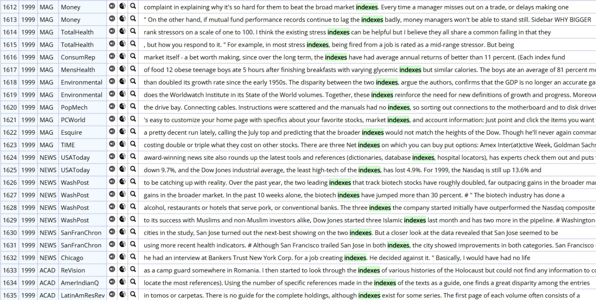
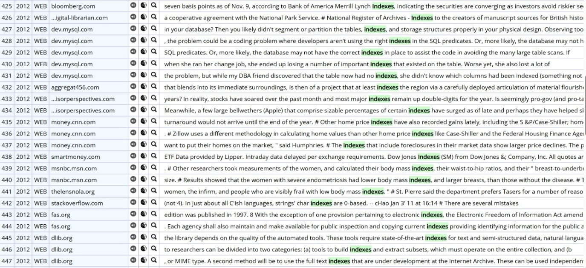
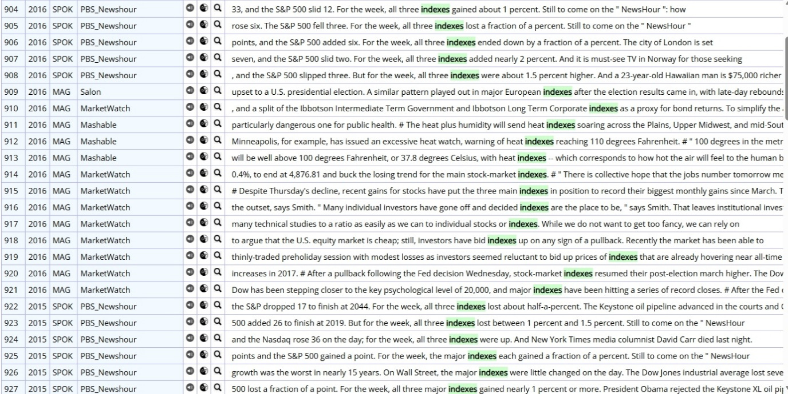
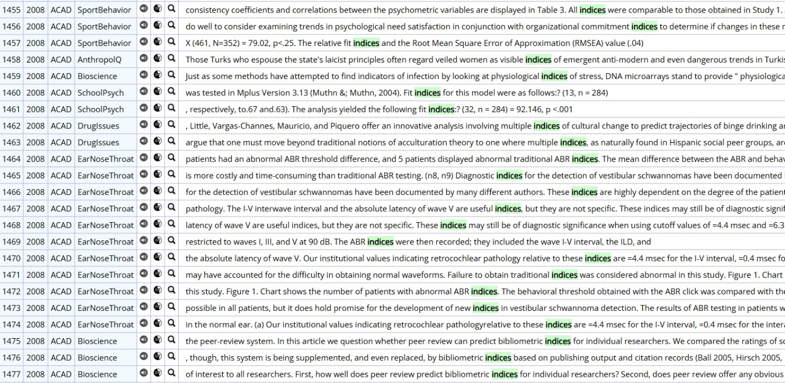
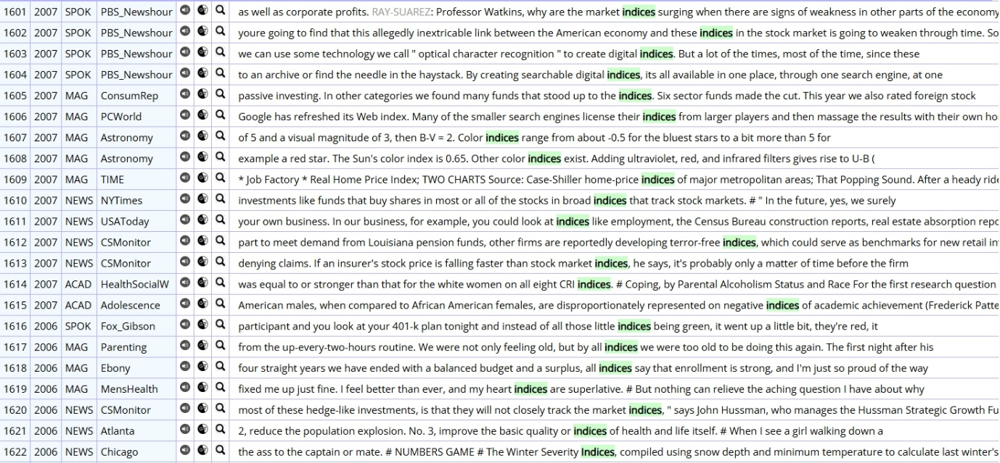
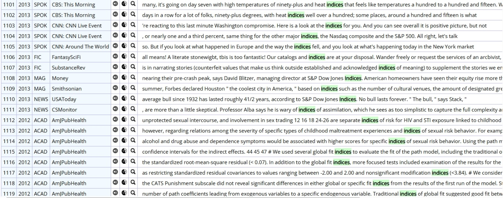
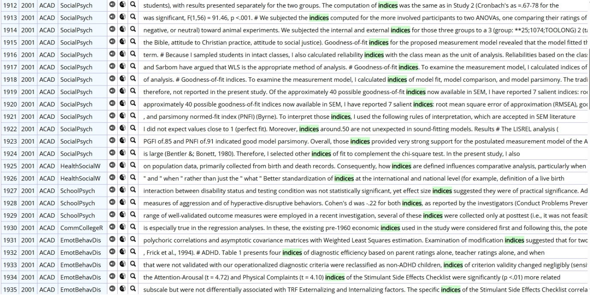
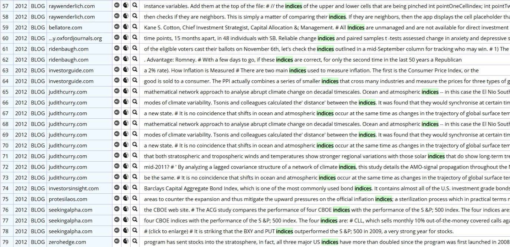